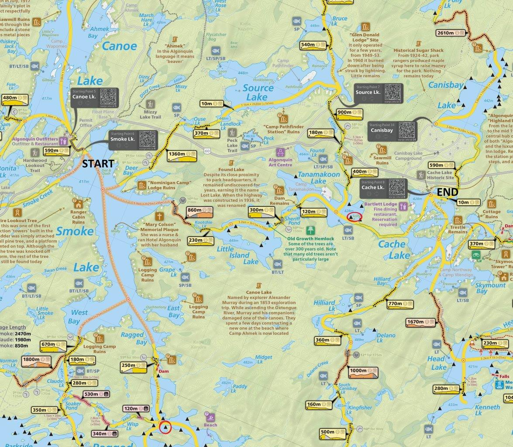
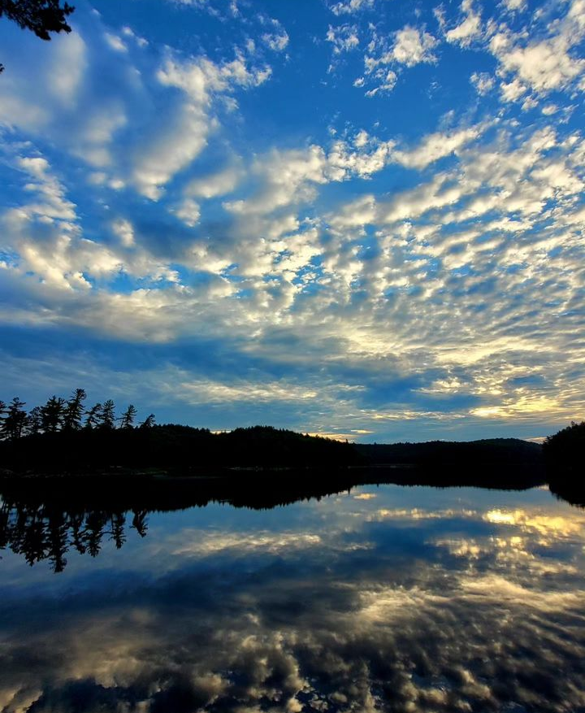
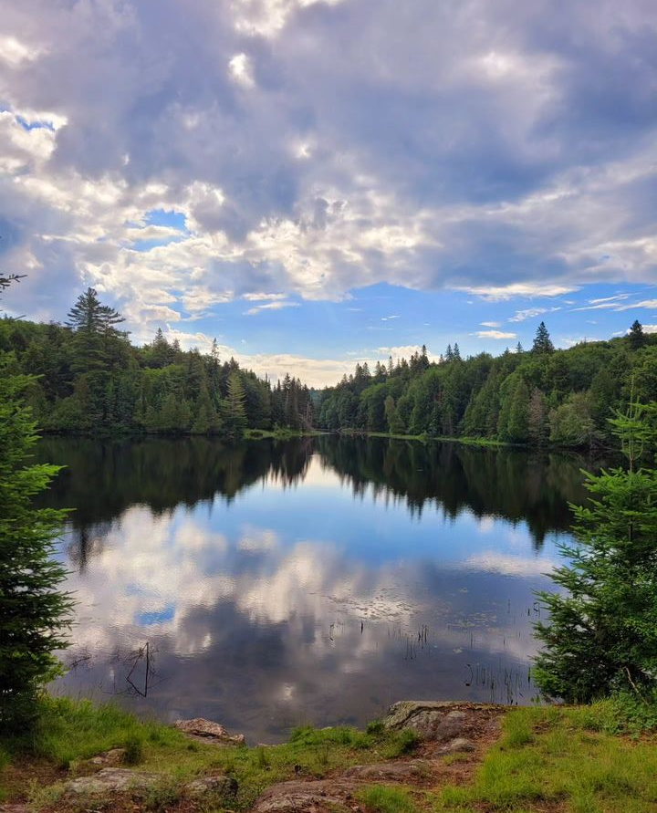
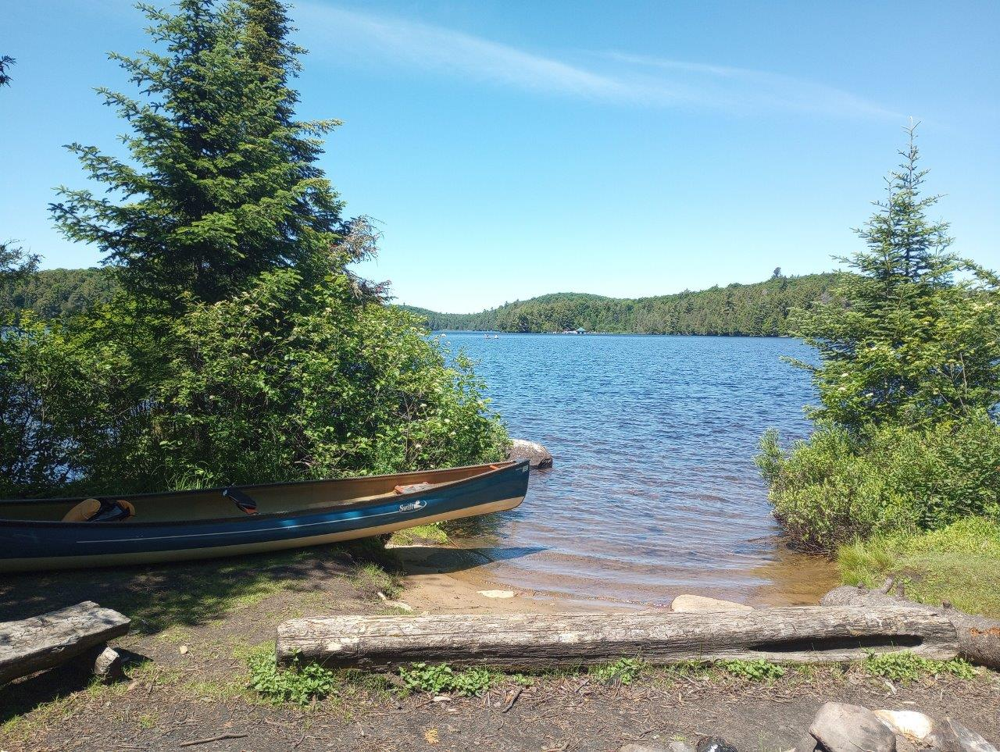
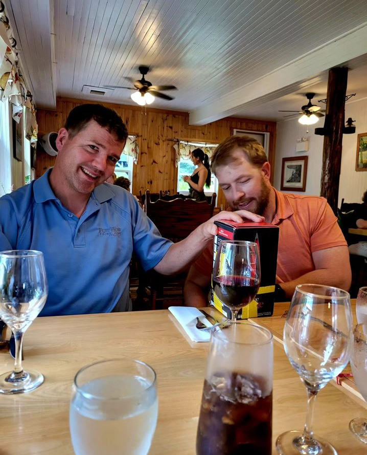

 |
2024 July 4-6 Smoke Lake to Cache Lake from Access Point 6 (Smoke Lake).
Day 1 - Smoke to Ragged Lake (campsite circled in red)
Day 2 - Ragged-Smoke-Kootchie-Little Island-Sheriff Pond-Tanamakoon
Day 3 - Tanamakoon to Cache Lake
Total Portages - 6 (2010 m)
Was planning a 3rd night to Bruce Lake via Source Lake, various reasons including weather we cut it short. Went with Bill and Steve, good times |
 |
Met up with Steve and Bill around 1pm at Smoke Lake landing, started off around 1:30pm on Smoke Lake, paddling the entire length into Ragged Bay against a stiff cross/headwind. Very hot and humid day. |
 |
View from the landing of our site on Ragged Lake. Quite a nice site, good view towards the little island (former campsite) and the entrance to the lake from the portage. Pretty nice spot to swim as well. |
 |
Steve's photo of Ragged Lake from our site. We had a nice hamock setup here and had a good relaxing evening with a nice fire (pakced in some pre-cut wood). |
 |
Looking down Smoke Lake (Ragged Bay) from the portage from Ragged Lake. Started off around 9am and the wind wasn't too bad, long and hot paddle to Tanamakoon today. |
 |
View of Kootchie Lake (Steve's Photo) from the portage into Little Island lake. Really not a bad looking lake but more of a pond really. |
 |
Little Island Lake, looking at the little island. This lake was booked solid the entire time we were on trip, which is too bad. Couldn't even find an open site for lunch, I'll have to camp here later. |
 |
Stayed on Scilly Island on Tanamakoon on night 2. This photo is from Katie and my trip to Algonquin 3 weeks prior. Great site, did some decent swimming and relaxed a bit more in the hammock. |
 |
Stormy and rainy afternoon and evening, had to paddle in the rain to get to Bartlett and change into dry clothes in a cabin. Brought this classy box of wine in (it got wet so needed some duct tape repairs), good laughs were had. |
 |
Paddling out to Cache Lake landing on Day 3, looking down the end of the creek from Tan to Cache (old friend the leaining tree). Since our cars were at Smoke lake, I ran 10km down the highway to grab the car and do a bit of shuttling. Drove to huntsville after and had a nice burger and a pint with the boys before departing. Good trip. |